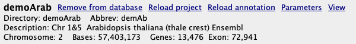
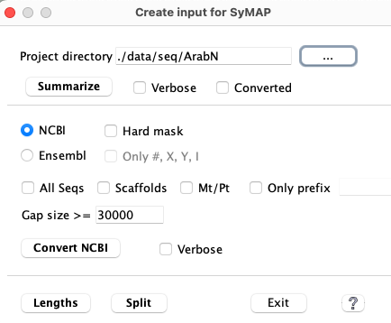
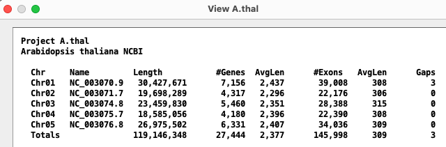

|
|
|
|
Input files
| Sequence | Annotation | Location of files | Go to top |
The input is one or more FASTA files of sequences (genome, scaffold, contig), with optional GFF formatted annotation file(s).
- As of v5.5.7, many NCBI and Ensembl files can be loaded directly, though variations could limit some.
See Tested genomes for results on loading the files directly.
- xToSymap converts the NCBI and Ensembl files to a format friendly to symap;
i.e. it is superior than directly loading the files;
see NCBI and Ensembl.
If you are using files from another source, see Other.
- The documentation and SyMAP interface assumes a knowledge of the Linux directory (folder) structure, as used by a terminal application.
Sequence files
The sequence file(s) must be FASTA format with one or more sequences. A header line, which starts with a ">", occurs before the sequence, e.g.>Chr01 NC_003070.9 chromosome ccctaaaccctaaaccctaaaccctaaacctctGAATCCTTAATCCCTAAATCCCTAAATCTTTAAATCCTACATCCATG AATCCCTAAATACCTAAttccctaaacccgaaaccggTTTCTCTGGTTGAAAATCATTGTGtatataatgataattttat...The first word (Chr01) is used as the sequence identifier (seqid) in symap. If the seqid is >20 characters, the sequence will be ignored. The second word is the secondary name (NC_003070.9), see Secondary name.
Identifier (seqid)
Important points in naming sequences for SyMAP:| A. | Sequence identifiers can only contain letters, numbers, underscores "_", dash "-" or period ".". This is in contrast with names allowed in gff3 files, which allows the seqid to contain the additional characters of [:^*$@!+?|]. The sequence identifier (seqid) must be renamed if it contains any of these characters. |
| B. | The sequence identifiers must exactly match those used in the annotation files (first column), or the annotations will not be loaded. |
| C. | Use a consistent prefix such as "Chr" for all sequences, then set Group prefix to the prefix in project's Parameter panel. |
| D. | If there is not a consistent prefix, you may leave the Group prefix blank; beware, this can have unintended results, so should be avoided if possible. Make the names short so they will not clutter the display. You may need to rename your sequence, in which case, it must be done in the FASTA and GFF files. |
| E. | The xToSymap NCBI and Ensembl conversion programs will create a short name for the sequences and provide the renaming in both the FASTA and GFF files. One of these programs may also work for files created elsewhere; see Other inputs. |
Masking
Masked sequence:- SyMAP does not perform the repeat-masking so it must be done with another program.
However, you may obtain masked sequences from NCBI or Ensembl.
- NCBI provides soft-masked sequences where the xToSymap NCBI interface provides the option to change it to hard-masked.
- Ensembl provides both soft and hard-masked sequences.
- Masking reduces alignment time and false-positive hits,
but also runs a risk of concealing true hits due to inaccurate masking.
Masking is not really necessary unless the genome is highly repetitive
and those repeats are shared with other genomes being aligned.
- Occasionally, MUMmer fails aligning sequences, which can be resolved by masking the sequence (see MUMmer, which explains detection and solutions for known reasons for failure).
Mask genes:
- Another masking option, which is available if you have gene
annotation, is to mask out everything but the annotated genes. You
can enable the Mask non-genes option on the
Pair Parameter window;
turn it on before doing the alignments.
- This is useful if you only care about the gene synteny, you are confident in your GFF file,
and you want very fast MUMmer computations.
- This is also useful for really large genomes, e.g. wheat is 14Gb and could only be processed on a Mac laptop by masking it.
Annotation files
Annotation files should be in gff3 format, which is a tab-delimited file of 9 columns.| Seqid | The first column must exactly match the sequence identifier in the FASTA files. | ||||
| Type | The third column determines how SyMAP uses the entry.
Only types gene, mRNA, exon, gap or centromere are recognized. | ||||
| Attribute | The last column contains "keyword=value" pairs describing the annotation.
| ||||
| Order | Each mRNA and its exons must come after the parent gene and before the next gene.
The mRNA must be before its exons, but it is okay if all the mRNAs for a gene are listed first. Exons are entered in the order they are found; they must be either ascending or descending. |
For example (extracted from Ensembl gff3 file):
1 araport11 gene 11649 13714 . - . ID=gene:AT1G01030;Name=NGA3;.... 1 araport11 mRNA 11649 13714 . - . ID=transcript:AT1G01030.2;Parent=gene:AT1G01030.... 1 araport11 three_prime_UTR 11649 11863 . - . Parent=transcript:AT... 1 araport11 exon 11649 12354 . - . Parent=transcript:AT1G01030.2.... 1 araport11 CDS 11864 12354 . - 2 ID=CDS:AT1G01030.2;Parent=transc... 1 araport11 CDS 12424 12940 . - 0 ID=CDS:AT1G01030.2;Parent=transc... 1 araport11 exon 12424 13173 . - . Parent=transcript:AT1G01030.2.... 1 araport11 five_prime_UTR 12941 13173 . - . Parent=transcript:AT... 1 araport11 exon 13335 13714 . - . Parent=transcript:AT1G01030.2.... 1 araport11 five_prime_UTR 13335 13714 . - . Parent=transcript:AT... 1 araport11 mRNA 11649 13714 . - . ID=transcript:AT1G01030.1;Parent=gene:AT1G01030.... 1 araport11 three_prime_UTR 11649 11863 . - . Parent=transcript:AT... 1 araport11 exon 11649 13173 . - . Parent=transcript:AT1G01030.1.... 1 araport11 CDS 11864 12940 . - 0 ID=CDS:AT1G01030.1;Parent=transc... 1 araport11 five_prime_UTR 12941 13173 . - . Parent=transcript:AT... 1 araport11 exon 13335 13714 . - . Parent=transcript:AT1G01030.1.... 1 araport11 five_prime_UTR 13335 13714 . - . Parent=transcript:AT...For the above example, the following information will be saved in the SyMAP database:
1 gene 11649 13714 ID=AT1G01030;Name=NGA3;rnaID=AT1G01030.2;desc=.... 1 exon 11649 12354 1 exon 12424 13173 1 exon 13335 13714
Location of files
Project name and directory:
- The project-name should be a short descriptive name
containing only alphanumeric characters, periods, underscores and hyphens; do not use symbols like %, $, spaces, etc.
The names are case-sensitive, so you cannot have "Mus" and "mus" for two different projects.
- The project-name is the same as the directory name for the project, i.e.
data/seq/<project-name> - The project-name is used in the data/seq_results directory name and MUMmer output file names.
For example, the alignments between project-names demo_seq and demo_seq2 are in the directory
data/seq_results/demo_seq_to_demo_seq2
and the MUMmer results file are named using it, e.g.
demo_seq_f2.demo_seq_f1.mum. - You should not rename this directory after the data is loaded into SyMAP! However, you can define a Display Name in the project's Parameter to be used in the symap displays, which can be change at any time.
Location:
Each project has a directory as follows:
/data/seq/<project-name>
The default location for sequence and annotation files is:
/data/seq/<project-name>/sequence /data/seq/<project-name>/annotationCreate project: Use one of the following ways to indicate to symap where the project's input files are:
- Default: Create these sub-directories under /data/seq and put your files there,
e.g using project-name=foobar:cd data/seq mkdir foobar cd foobar mkdir sequence mkdir annotation
Move your FASTA file(s) to data/seq/<project-name>/sequence (e.g. data/seq/foobar/sequence) and your optional GFF files(s) to data/seq/<project-name>/annotation (e.g. data/seq/foobar/annotation) - xToSymap: This program puts the files in the default locations;
see xToSymap.
- Link: Create these sub-directories under /data/seq and use soft links to point to the file locations,
e.g using project-name=foobar:cd data/seq mkdir foobar cd foobar ln -s <location of directory of sequence files> sequence ln -s <location of directory of annotation files> annotation
- Add and define:
- Use the Add project button on the symap interface (lower-left corner; see Manager). This add the project name to the data/seq directory.
- Use the project's parameter panel to enter the location of the sequences and optional annotation files into the Sequence files and Anno files parameters.
Load Project
For options 1-3, it is not necessary to enter the locations of the files in the project parameter panel since they use the default locations.
|
All sub-directories in data/seq are shown on the left-panel under Projects
using its Display name, which is set in the project's parameters.
Select a Project to show it on the right-hand side; the project-name is shown beside the label Directory. |

|
| Load project accesses the files and loads them into the database. Once loaded, the View option will be present. Always check the results before continuing!! |  |

The symap program requires the directories to be present (and will create them if necessary), viewSymap does not access the directories.
xToSymap Interface
| Interface | Summarize | Convert | Lengths | Split | Go to top |
xToSymap was added to the SyMAP tar file in release v5.5.7 and updated in v.5.5.8.
|
Project Directory: All options and function buttons will be disabled until a project directory is selected. The options Converted, Lengths and Split are disabled when there is no /sequence sub-directory, which is created when Convert is executed. Convert options: |  |

| 1. | Summarize | This will output basic statistics. Run this first to make sure your input is valid. |
| 2. | Convert | The NCBI and Ensembl options create the /sequence and /annotation sub-directories with files ready for input to symap. If these sub-directories exist, any existing FASTA and GFF files will first be removed. |
| 3. | Summarize
with Converted | Run this to make sure that the conversion worked as you expected.
This shows the sequence prefixes, and can be used to set the Group Prefix in the symap Project Parameters. |
| Optional. The following run on the files in the /sequence and /annotation sub-directories. | ||
| 4. | Lengths | Run it to see if you need to set a Minimal lengths value in symap Project Parameters. |
| 5. | Split | Splits the converted file genomic.fna and anno.gff into a file per chromosome. |
NOTE: The NCBI and Ensembl files have variations and I may not have accounted for them all. If Convert does not work as you wish, the files ConvertNCBI.java and ConvertEnsembl.java are available for Edit.
Summarize
Summarize will look in the following directories for the FASTA and optional GFF files to process, in the following order (this assumes a project name is cabb):- Directly under the project's directory, e.g.
symap_5/data/seq/cabb Brassica_oleracea.BOL.dna_sm.toplevel.fa.gz Brassica_oleracea.BOL.59.gff3.gz - The project's ncbi_datasets/data/<sub-directory>, e.g.
symap_5/data/seq/cabb/data/seq/ncbi_dataset/data/GCF_000695525.1 GCF_000695525.1_BOL_genomic.fna genomic.gff - The project's sub-directories /sequence and /annotation, e.g
symap_5/data/seq/cabb sequence/ genomic.fna annotation/ anno.gff
The GFF file must end in .gff or .gff3 (with optional .gz).
Summarize with Converted assumes there are converted files.
The following is an example terminal and log file output:
------ Summary for ./data/seq/cabbN ------
Log file to ./data/seq/cabbN/xSummary.log
Sequence directory: ./data/seq/cabbN/ncbi_dataset/data/GCF_000695525.1 29-Jul-2024 10:16
GCF_000695525.1_BOL_genomic.fna
Annotation directory: ./data/seq/cabbN/ncbi_dataset/data/GCF_000695525.1
genomic.gff
FASTA sequence file(s)
Example header lines:
Chr: >NC_027748.1 Brassica oleracea var. oleracea cultivar TO1000 chromosome C1, BOL, ...
Scaf: >NW_013617415.1 Brassica oleracea var. oleracea cultivar TO1000 unplaced genomic ...
Mt: >NC_016118.1 Brassica oleracea mitochondrion, complete genome
Count Totals:
9 Chromosomes
32,876 Scaffolds
1 Mt/Pt
32,886 Total sequences
Count Prefixes:
32,876 NW_
10 NC_
Counts of Length Ranges:
32,284<10k 552<100k 41<1M <10M 5<50M 4<100M
488,954,160 Total length
GFF Annotation file(s)
Summary:
44,386 Genes from 49,563 (use protein_coding only)
44,382 mRNAs from 56,687 (44,382 has protein_id)
227,191 Exons from 398,922
Gene Attribute:
44,386 Dbxref 44,386 ID
44,386 Name 569 end_range
7 exception 44,386 gbkey
44,386 gene 44,386 gene_biotype
81 locus_tag 7 part
985 partial 499 start_range
mRNA Attribute:
44,305 product
Input type: NCBI chr NC_ prefix; NCBI GFF header
NCBI 'gene_biotype' keyword; NCBI mRNA 'product' keyword
------ Finish summary for ./data/seq/cabbN/ ------
Observations:
| 1. | The last line confirms that the NCBI radio button should be selected for Convert. |
| 2. | It shows that there are 9 chromosomes to be converted to symap files. |
| 3. | It confirms that an mRNA and exons are found for each protein-coding gene. |
| 4. | On the first example line, it has 'chromosome C1'. Since the 'chromosome' is followed by 'C1' instead of a digit (i.e. 1), the chromosome identifier will be 'C1' in the conversion. |
| 5. | After conversion, the summary will be like this
log file.
There is a remark that the file may be hard-masked, which was not done by the ConvertNCBI; strangely, the chromosomes in the NCBI file were hard-mask but the scaffolds were soft-masked. If the summary has been computed with Verbose, it would show the count of all nucleotides upper and lower case, which would show zero lowercase and many N's. |
Verbose
The Ensembl cabbage files Verbose summary log file look like this Ensembl summary log. The verbose mode takes longer to execute, but has the following extra information:- From FASTA:
- Base count (maximum 2,147,483,647 bases).
- Lengths of 5 sequences.
- From GFF:
- The first gene, mRNA and exons lines.
- Types, e.g. gene, mRNA, and exon.
- Gene Attributes biotype, e.g. protein_coding.
As shown in Tested genomes, it appears to be more common not to have a letter before the chromosome number (e.g. chromosome 1), in which case the chromosome identifier will be Chr01. For example, for Homo sapiens, see the NCBI summary log compared to the Ensembl summary log (both are Verbose output).
Summarize shows a few of the header lines, and with Verbose checked, more are shown. This should aid in determining how to set the options. If this is not enough, execute the following on your FASTA file:
zgrep ">" [use your FASTA file name]
Convert
| 1. | Select NCBI or Ensembl. |
| 2. | Select the options you want; see NCBI or Ensembl options. |
| 3. | Select Convert. |
Lengths
The FASTA files must be in the project's /sequence sub-directory (e.g. symap_5/data/seq/cabbN) for this to work. It reads the FASTA file(s), prints out the names and lengths of all sequences, then writes a summary.Summary: If your file has many small scaffolds and you just want to process the large ones, the summary will help you decide what value to use as the Parameter Minimum length values. For example, the following is output from Length:
Values for parameter 'Minimal length' (assuming no duplicate lengths): #Seqs Minimum length 10 550,871 20 193,719 30 152,041 40 122,531 50 98,180 60 85,914 70 70,524 80 65,697 90 61,049 100 58,280If you set the Minimal length at 550,871, SyMAP will process the 10 largest sequences.
Split
The input files are:sequence/genomic.fna annotation/anno.gffThe function will do the following:
- Split genomic.fna into a separate file per chromosome, and put all other sequences in scaf.fna. The genomic.fna file is deleted when done.
- Split anno.gff into a separate file per chromosome, and put all other sequences in scaf.gff. The anno.gff file is deleted when done.
General
| Secondary name | Original files | Tested genomes | Editing the convert scripts | Go to top |
Secondary name
A secondary name can be assigned during the symap Load Project action. If a sequence header has between 2-3 words, the 2nd word will be used as the secondary name as long as it is <=20 characters. The following example shows the header line of an NCBI xToSymap converted file.>Chr01 NC_003070.9 chromosome
|
The symap Load Project will make
Chr01 the unique identifier and NC_003070.9 will be its secondary name.
This secondary name will be shown on the View popup.
Ensembl xToSymap converted files do not have a secondary name. Note: The secondary name was introduced in v5.8.2. |  |

Original files
Load Original NCBI File: Though it is not recommended, the original NCBI files will probably load. An example header line will be:
>NC_003070.9 Arabidopsis thaliana chromosome 1 sequenceIn this case, NC_003070.9 will be its identifier and "Chr01" will be its secondary name. The secondary name is only assigned if the value "chromosome " or "scaffold " exists on the header line.
Load Original Ensembl File: This will usually work, but generally no secondary name is assigned. However, in some cases it does assign one incorrectly, which will look weird in View.
Loading the original files can lead to small problems. For example,
- symap will load names with the "." in them to preserve the original name, but these cannot be searched on in Query.
- Genes are not restricted to protein-coding.
- See Load original files for more examples.
Tested genomes
In Aug 2024, the scripts were tested on the following:| Genome | NCBI | Ensembl | Sequence bp in file | Note |
|---|---|---|---|---|
| Arabidopsis thaliana (thale crest) | Chr 1-5 | Chr 1-5 | 119M | |
| Brassica oleracea (wild cabbage) | C1-C9 | C1-C9 | 489M | C prefixes chr# |
| Oryza sativa (rice) | Chr 1-12 | Chr 1-12 | 386M | |
| Prunus persica (peach) | G1-G8 | G1-G8 | 228M | G prefixes chr# |
| Prunus yedoensis | Scaffolds 4015 | N/A | 319M | Draft |
| Caenorhabditis elegans (worm) | Chr I,II,III,IV,X | Chr I,II,III,IV,X | 100M | |
| Bemisia tabaci (whitefly) | Scafs 19,750 | Contigs 227 | 615M | |
| Danio rerio (zebrafish) | Chr 1-25 | Chr 1-25 | 52,633M | Contains 930 ALT CHR |
| Oryctolagus cuniculus (rabbit) | Chr 1-21, X | Chr 1-21, X | 2,841M | |
| Homo Sapiens (human) | Chr 1-22, X, Y | Chr 1-22, X, Y | 3,298M |
See Tested datasets and timings for the Alignment&Synteny compute times for a range of species pairs.
xToSymap - exceptions to the defaults
The above downloaded genomes were all converted with the xToSymap defaults, with the following exceptions:
- Ensembl Danio rerio (zebrafish): The 100's of 'Alt' sequences appear as valid chromosomes,
hence, the Only #,X,Y,I option was used.
- Ensembl Bemisia tabaci (whitefly): The words 'chromosome' or 'scaffold'
were NOT part of the header lines. The header line ID prefix was 'Contig',
hence, the Prefix only='Contig' was used; the output used the sequence ID prefix 'Unk'.
Then Lengths was used to determine a Minimal length
to enter on symap project Parameters.
- NCBI Bemisia tabaci (whitefly): Only had scaffolds, so including Scaffolds was necessary.
Then Lengths was used to determine a Minimal length
to enter on symap project Parameters.
- NCBI Prunus yedoensis:
The words 'chromosome' or 'scaffold'
were NOT part of the header lines. The header line ID prefix was 'CPJQY' (not the NCBI prefix of 'NC_'),
hence, the Prefix only='CPJQY' was used; the output used the sequence ID prefix 'Unk'.
- Cabbage had 'C' before its chromosome number so the chromosome names were C1, C2, etc.
Peach had 'G' before its chromosome so the chromosome names were G1, G2, etc. .
Input variations: There are probably more variations then shown here, which may possibly be handled with the Ensembl Only #,X,Y,I option or NCBI/Ensembl Only prefix option. If not, you may want to edit the script to tailor it (see Edit). Alternatively, you can contact me (cas1@arizona.edu) and I will make the edit for you (it allows me to add the your variation to xToSymap).
Load original files
To load the originals files into SyMAP, the following was done:
- Create /sequence and move the FASTA file into it.
- Create /annotation and move the GFF file into it.
- Run the xToSymap Summarize and Lengths functions.
- For Ensembl, a Minimal length was set to only load the sequence >= the smallest chromosome length.
- For NCBI, Group prefix to 'NC_' to only load the chromosomes.
For example, for species such as Homo Sapiens, if Group prefix or Minimal length were NOT specified, over 500 sequences were loaded. With Ensembl, it also had a problem with duplicate entries because it has scaffold names such as HSCHR19KIR_CA01-TB04_CTG3_1 and HSCHR19KIR_CA01-TB01_CTG3_1, where the name was truncated at the "-", hence, HSCHR19KIR_CA01 is a duplicate name.
- Ensembl Danio rerio (zebrafish): It could not be loaded without conversion. It has 1922 sequences where most of them had prefix "ALT", the word 'chromosome' in their header line, and were the size of their REF chromosome, so setting a Minimal length did not exclude them. And there was no unique chromosome ID prefix to use as the Group prefix in symap.
A&S with the originals:
- Ensembl Oryza and NCBI Arabidopsis were aligned and synteny computed. There was no problem with the Synteny, but the Arabidopsis names cluttered the displays, and there were many attributes for each.
- NCBI Mus musculus and Homo Sapiens were converted/split and their Chr17 successfully aligned.
Editing the convert scripts
- The convert scripts are in the symap_5/scripts directory called
convertNCBI.java and convertEnsembl.java.
- Move the one you want to change to the symap_5/data/seq directory, as
it must be run from there.
- Once you make your changes, execute: javac ConvertNCBI.java
You will need to have JDK installed to use the javac command. - To run your compiled script: java ConvertNCBI <project directory name>
These scripts are simply written, using only standard operations found in all major languages.
| Go to top |
Email Comments To: cas1@arizona.edu